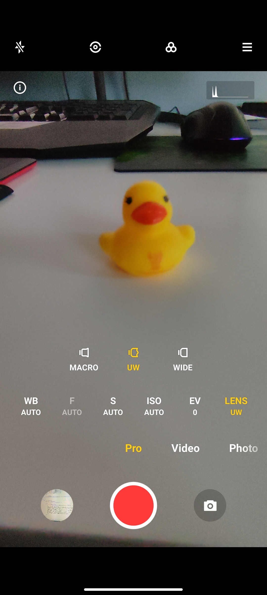
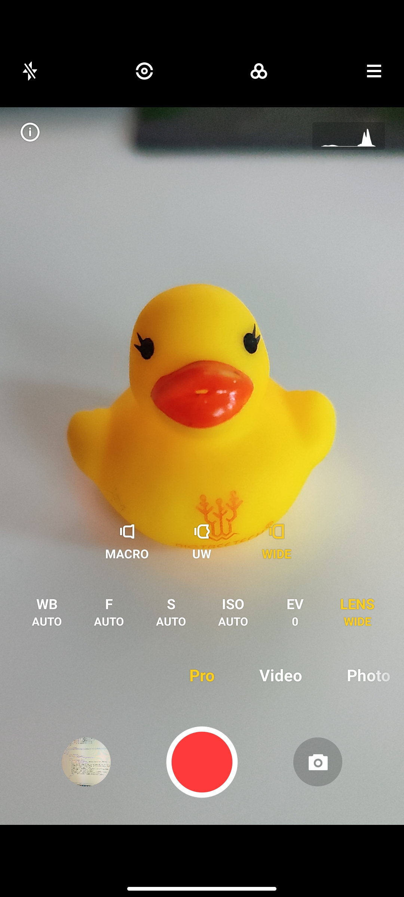
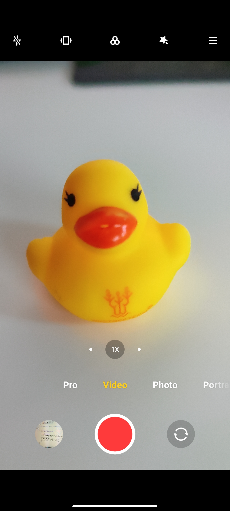

Plynulý obraz a krásne farby na komplexnom mobilnom zariadení nám zabezpečí Oled displej, ktorý má 2 možnosti operácie. prvou možnosťou je 120hz obnova obrazu, ktorá je krásna ale taktiež za ňu platíme väčšiou spotrebou batérie. Druhá možnosť je klasických 60hz, čo je tiež obstojné, no ani zďaľeka nie také obstojné, ako 120hz. Systém nám ponúka dva módy zobrazenia užívateľského prostredia a to dark a light mod ako sa dá vidieť na obrázku.

108MP pro mód

Macro kamera
Ultra Wide
Wide
Video kamera

Portrét mód

Základný foto mód

Vďaka štvorici objektívov môžete fotiť rôzne druhy fotografií, od bežných momentiek až po pôsobivé portréty. Hlavný objektív telefónu Xiaomi Redmi Note 10 Pro dokáže zhotovovať ostré fotky s bohatými detailmi s rozlíšením 108 Mpx. Širokouhlý objektív zaberá až 118° uhol, čo oceníte ak chcete do záberu dostať čo najviac objektov. S hĺbkovým a makro objektívom potom zaobstaráte krásne portrétne fotografie s bokeh efektom alebo makro snímky zblízka už od dvoch centimetrov. Na prednej strane Xiaomi Redmi Note 10 Pro nájdete v nepatrnom „priestrele“ v hornom rohu displeja 16 Mpx kameru pre selfie a videohovory.